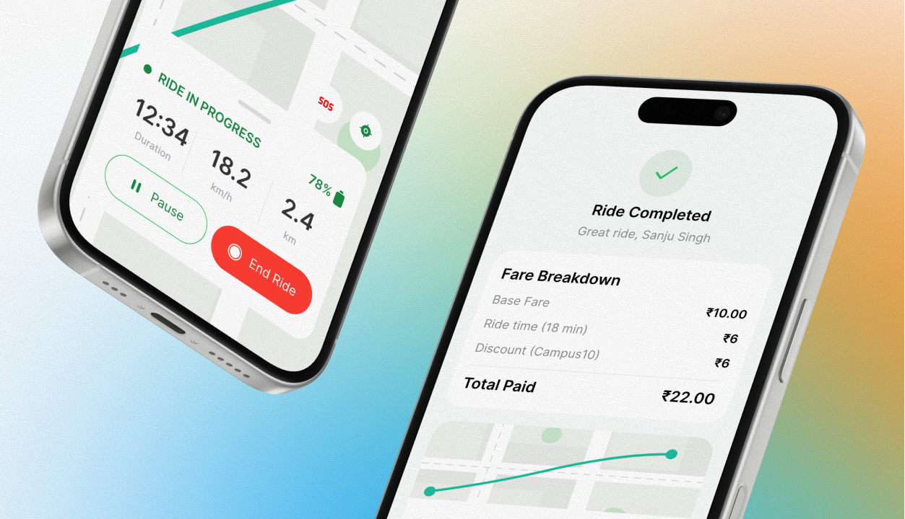
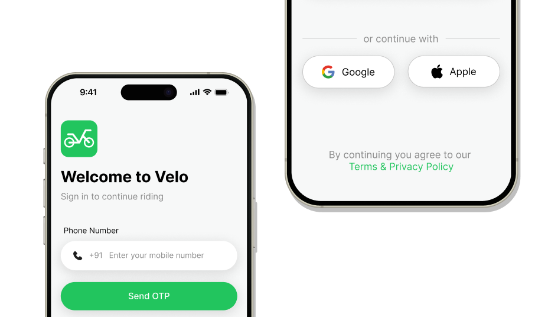
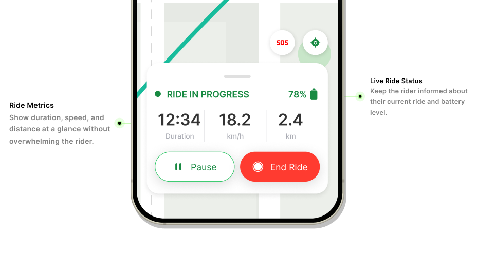
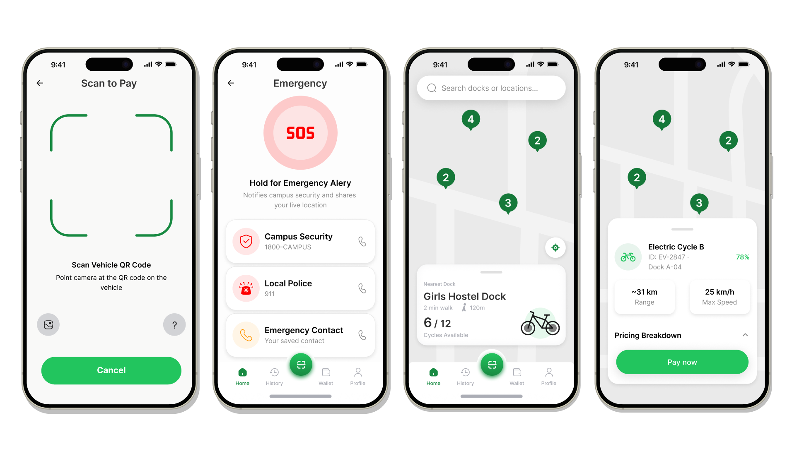
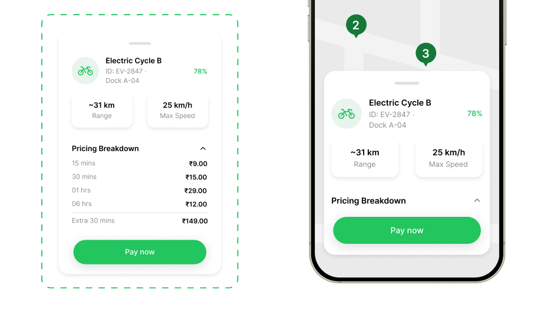
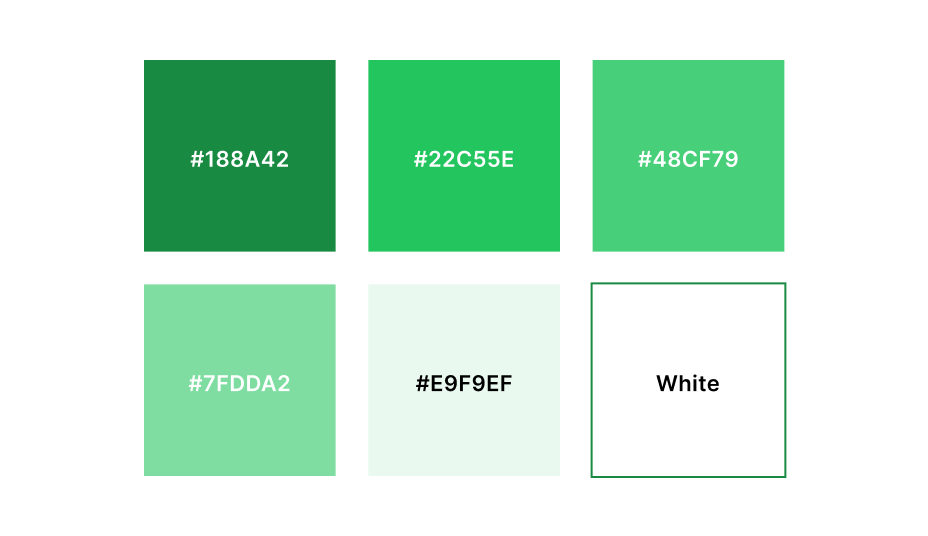

Velo
Campus Mobility App
Making campus commutes effortless from the first tap.
Velo is a student-first EV cycle and scooter rental app built to replace 20-minute campus walks and manual paper-register rentals with instant QR unlocking, live dock availability, and student-friendly UPI micro-tariffs.
Average daily walking distance between hostels and lecture blocks.
Time from opening the app to unlocking an EV cycle via QR scan.
Students preferring upfront per-minute fare transparency.
Manual logs & dead batteries at stands
Students run late to morning lectures because existing campus rentals rely on physical keys, paper logs, and zero visibility into whether a cycle is actually charged at a nearby stand.
Live dock radar & 1-tap QR unlock
A real-time campus map showing exact EV counts and battery range at every hub, paired with instant QR unlocking, a "Pause Ride" lock for quick stops, and 1-tap UPI checkout.
A visual walkthrough of the product experience.

Quick phone & university ID sign-in with zero document uploads.

Check exact battery percentage and km range before walking downstairs.

One-handed QR scanner, live speed/duration tracking, emergency SOS, and a 1-tap "Pause Ride" lock for quick coffee or lab stops.

Itemized post-ride receipt with student promo passes (Campus10) and zero hidden fees.

Eco-green (#19B35A) and carbon slate tokens built for harsh outdoor campus sunlight.
Designing across hardware and screen.
Building Velo pushed me to design beyond happy-path screens—solving for low-battery states mid-ride, GPS drift near hostels, and outdoor glare legibility in one cohesive visual system.